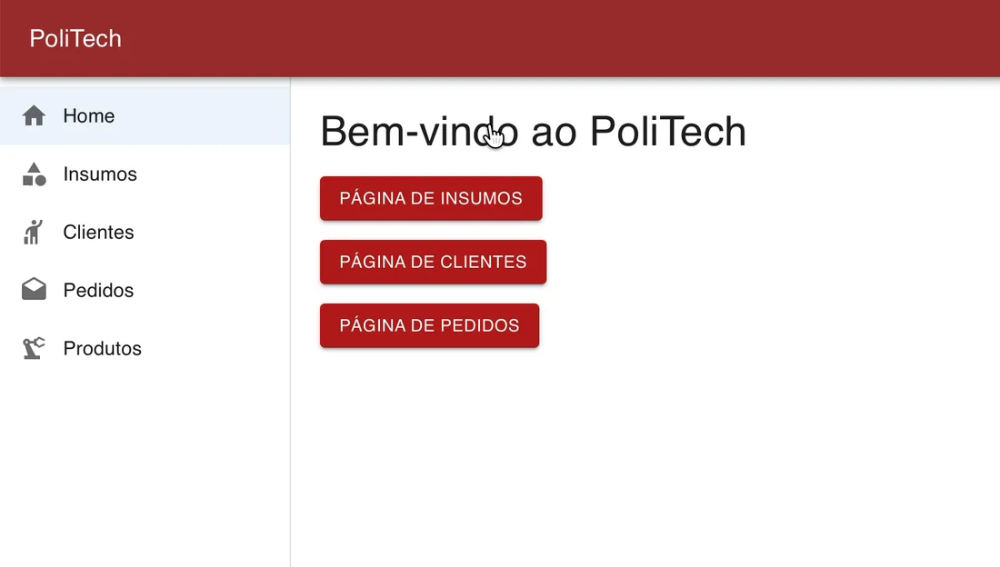

Problema
A empresa usava planilhas e registros em papel para controlar informações. Isso dificultava localizar dados e acompanhar os materiais e os pedidos ao longo do processo.
O objetivo do PoliTech é centralizar os cadastros e facilitar a consulta de informações usadas na produção e no acompanhamento dos pedidos.

O PoliTech foi desenvolvido durante o estágio para apoiar a rotina da Polican Perfis de Alumínio.
A empresa usava planilhas e registros em papel para controlar informações. Isso dificultava localizar dados e acompanhar os materiais e os pedidos ao longo do processo.
O sistema reúne os cadastros em uma interface web. Os pedidos ficam vinculados aos clientes e aos itens selecionados no catálogo.
O módulo de Estoque saiu do planejamento. Gerenciar Insumos permanece no escopo. O catálogo de produtos passou a apoiar a criação de pedidos, com seleção do produto, quantidade e preço unitário.
A interface envia as operações para a API REST via Axios. A API valida os dados e usa o PostgreSQL para armazenar os registros.
Versões verificadas no arquivo de dependências do frontend e nos metadados do ambiente Python.
O diagrama reúne seis casos de uso para a gestão de clientes, insumos, produtos, pedidos, notas fiscais e finanças.
| Caso de uso | Descrição | Situação |
|---|---|---|
| Gerenciar Clientes | Cadastrar e manter os dados dos clientes. | ImplementadoA gravação mostra consulta, cadastro e formulário de edição. O código inclui edição e desativação lógica. |
| Gerenciar Insumos | Registrar e consultar os materiais usados na produção. | ImplementadoA gravação mostra consulta, cadastro e alteração. A desativação lógica está no código. |
| Gerenciar Produtos | Manter o catálogo de produtos usados nos pedidos. | ImplementadoO módulo permite cadastrar, consultar, editar e desativar produtos do catálogo usado nos pedidos. |
| Gerenciar Pedidos | Criar, editar e acompanhar pedidos vinculados a clientes e aos respectivos itens. | ImplementadoO módulo permite criar, editar e acompanhar pedidos com cliente, itens, quantidades, preços e status. |
| Emitir Nota Fiscal | Emissão de nota fiscal vinculada a um pedido. | No escopoIncluído no diagrama atual. |
| Gerenciar Finanças | Registro e consulta de movimentações financeiras. | No escopoIncluído no diagrama atual. |
Diagramas de escopo, estrutura e comportamento do PoliTech, com versões anteriores disponíveis para consulta.
Abra a pasta original no Google Drive.
A gravação apresenta a versão executada do PoliTech. O vídeo e as capturas mostram operações com dados fictícios.


Relatório das atividades desenvolvidas no estágio.
Descrição do projeto, da documentação e das atividades realizadas.
Engenharia de Software · Centro Universitário Filadélfia (UniFil)